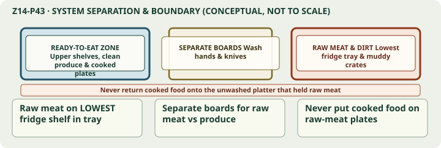

Z14-P43 · Food production and preservation · New manuscript
Prevent kitchen cross-contamination between raw meats, garden soil, and ready foods
Keep raw poultry/meat juices and unwashed garden dirt physically isolated from clean salads, breads, and cooked meals.
When it applies · Daily home meal prep, bulk canning/freezing prep days, and outage cooking.
Equipment · Dedicated color-coded cutting boards (one for raw meats, one for fresh produce), clean platters, and refrigerator bottom-shelf meat trays.

Actions
- Store raw meat, poultry, and seafood sealed in leak-proof containers or rimmed trays strictly on the LOWEST refrigerator shelf so raw juices can never drip downward onto ready-to-eat greens, fruit, or leftovers below.[F01, P16]
- Use separate cutting boards, knives, and prep surfaces for raw animal foods versus fresh fruits/vegetables and cooked foods—NEVER return cooked grilled meat onto the unwashed platter that carried it raw to the stove.[F01, P16]
- Keep muddy garden harvest crates and unwashed root vegetables off clean kitchen counters and away from sterilized canning jars and lids.[P16, P09]
Failure recognition · Setting a muddy basket of freshly dug carrots and a dripping package of raw chicken beside clean cooling canning jars on the same small counter.[F01, P16]
Verify · Confirm raw meats stored on lowest fridge shelf in rimmed trays, separate boards used, and clean platters hold cooked foods.[F01, P16]
Stop or change course · Raw meat juice dripping onto ready-to-eat salad or fruit requires discarding the contaminated uncooked item and washing/sanitizing the shelf immediately.[F01, P16]
Evidence and editorial notes
- F01 · USDA / FDA / CDC · Four Steps to Food Safety (current web edition)
- Section: Clean and Separate · Conditions: Food preparation with safe water and surfaces
Support: Wash hands and separate raw animal foods and juices from ready-to-eat food.
Limitations: Requires safe water or approved hand hygiene substitutes in outages. · Conflicting evidence: None; retained for food safety pack completeness.
Editorial note: Maintains five-pack integrity. · Specialist reviewer: Food safety and public health
Primary source · checked 2026-11-24 - P09 · NCHFP · Using Pressure Canners (current web edition)
- Section: Headspace, Jar Preparation, Two-Piece Lids, and Cooling Seals · Conditions: Mason-type canning jars with two-piece metal lids and screw bands
Support: Use true canning jars (never commercial mayonnaise jars), leave exact recipe headspace, remove trapped air bubbles, wipe jar rims clean, tighten bands fingertip-tight only, and let jars cool undisturbed 12–24 hours before checking vacuum seals and removing rings for storage.
Limitations: Inverting jars, tightening bands after cooling, or re-using flat sealing lids causes seal failure and silent spoilage. · Conflicting evidence: None; directly targets top home-canning mechanical failures.
Editorial note: Grounds jar-seal mechanics and inspection cards in Z14. · Specialist reviewer: Food preservation specialist
Primary source · checked 2026-11-24 - P16 · USDA / FDA / CDC · Four Steps to Food Safety (current web edition)
- Section: Clean, Separate, Cook, Chill > Produce Washing and Cross-Contamination · Conditions: Garden-to-kitchen harvesting, food prep, and preservation workspaces
Support: Wash hands 20 seconds with soap and safe water, scrub firm produce under running safe water before peeling/cutting, keep raw animal foods strictly separate from ready-to-eat produce, and sanitize prep surfaces and utensils between tasks.
Limitations: Washing produce with soap, detergent, or bleach is unsafe and not recommended. · Conflicting evidence: None; extends F01–F03 into garden harvest and home preservation.
Editorial note: Anchors kitchen sanitation and cross-contamination barriers in Z14. · Specialist reviewer: Food safety and public health
Primary source · checked 2026-11-24
Current assessment · A04-P16 (2026-11-25) · Bounded support newly confirmed (A04): Verified handling sequence for food preparation using safe water. No advice here for a water emergency or decontaminating a specific product. Limits: Specialist review PENDING (Food safety and public health); publication HOLD. All release decisions pending.
Source lineage · USDA/FDA/CDC FoodSafety.gov; new manuscript · Classification · New manuscript.